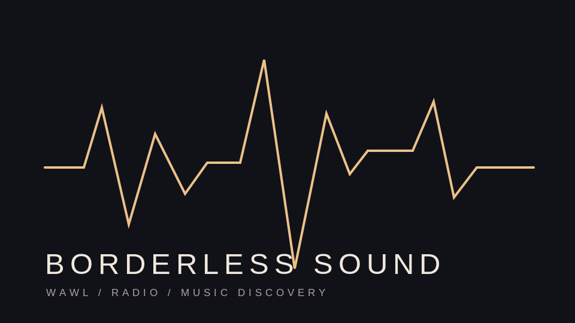

STORIES / MUSIC / CULTURE
Journalism.
Writing, photography, interviews, and broadcast media. Published work appears under its original publication and individual byline.
FEATURED EDITORIAL
From the pit.

THE COMMUNICATOR / OCTOBER 8, 2026
From the Pit: Lost in the Sound of wave to earth
REVIEW & PHOTOGRAPHY / KIETH TYLER FLORES
A concert review and photo essay from wave to earth's October 6 stop at Atlanta's Coca-Cola Roxy, exploring an intimate show inside an elaborate stage design.
READ PUBLISHED STORY ↗MORE WRITING
Published articles.
THE COMMUNICATOR / AUGUST 7, 2026
wave to earth enters a new era with “bad pieces”
Music reporting on the band's second full-length album, its recording approach, and evolving sound.
READ ORIGINAL ↗
THE COMMUNICATOR / SEPTEMBER 3, 2026
From Summer Class to Short Film
An interview-based feature on Amayia Mitchell's experience as a focus puller on Blue After Gold.
READ ORIGINAL ↗BROADCAST JOURNALISM
Borderless Sound.

WAWL / CHATTANOOGA STATE
International music discovery.
Hosted on WAWL by Kaztaku (Kieth Tyler Flores). The program explores music across cultures, including Korean, Japanese, and Filipino artists, and creates a space for discoveries beyond borders.
RADIO HOST / MUSIC PROGRAMMING
Article photographs remain credited to their original photographer; this page links to published articles rather than reproducing their full text.